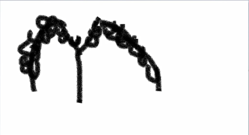

21. U(u-v-w 互相通假)
21.1. 坑, um-地点
museum /mjuˈziːəm/ n. 博物馆(muse沉思 + um地点 = 博物馆)
muse /mjuːz/ n. 沉思；冥想 vt. 沉思；沉思地说 vi. 沉思；凝望
muse over 冥想, 缅怀, 沉思
21.2. 利用
use /juːz/ vt. 使用，运用；利用；耗费；消耗；用掉；用完 n. 使用；用途；发挥
utilize/ˈjuːtəlaɪz/ vt. 利用(充分利用)
utilize = make full use of. 充分利用
23. W
23.1. 拐来拐去, 编织
weave /wiːv/ vt. 编织；编排；使迂回前进 vi. 纺织；编成；迂回行进 n. 织物；织法；编织式样
wave /weɪv/ v. 挥手；挥手示意；挥舞；飘扬；使（头发）略呈波形 n. 海浪；心潮；涌现的人（或物）；挥手；波；（头发）卷曲；（感情）爆发
water /ˈwɔːtə(r)/n. 水；海水；雨水；海域，大片的水 vt. 使湿；供以水；给…浇水 vi. 加水；流泪；流口水
mountain /ˈmaʊntən/ n. 山；山脉
man /mæn/ n. 人；男人；人类；丈夫；雇工 vt. 操纵；给……配置人员；使增强勇气；在……就位
woman /ˈwʊmən/ n. 妇女；女性；成年女子
24. X
24.1. 剪刀
axe /æks/ n. 斧 vt. 削减；用斧砍
axis /ˈæksɪs/ n. 轴；轴线；轴心国
25. Y(树丫-植物-禾苗)
year /jɪə(r)/ n. 年；年度；历年；年纪；一年的期间；某年级的学生(树有年轮)
field /fiːld/ n. 领域；牧场；旷野；战场；运动场；田野,字段(java程序字段) vi. 担任场外队员 adj. 田赛的；野生的 vt. 把暴晒于场上；使上场
yield /jiːld/ v. 出产（产品或作物）；产出（效果、收益等）；生息；屈服 n. 产量；利润，红利率(year + field)
yield有屈服的意思(果子太多): 
26. Z(拐)
zigzag /ˈzɪɡzæɡ/ n. 之字形(道路)，锯齿形线条；急转弯 v. 曲折前进，作之字形行进 adj. 曲折的，之字形的 adv. 曲折地，之字形地
dizzy /ˈdɪzi/ adj. 晕眩的；使人头晕的；昏乱的；心不在焉的；愚蠢的 vt. 使头晕眼花；使混乱；使茫然(盘山公路->眩晕)
dazzle /ˈdæzl/ v. （强光等）使目眩；（美貌、技能等）使倾倒；使眼花缭乱 n. 耀眼炫目；令人眼花缭乱的东西（或特性）；耀眼的光；灿烂，绚烂